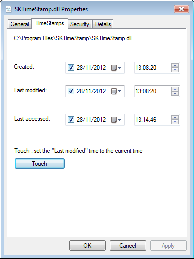
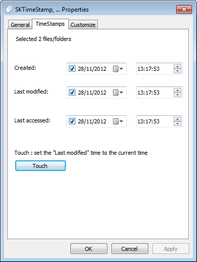

SKTimeStamp
SKTimeStamp is a very simple shell extension which adds a new tab to the Explorer properties dialog. On that new tab, you can change the file/folder date and time.
Go to the download page.
Windows XP not supported
SKTimeStamp requires Windows Vista or later. It won't work on Windows XP!
 